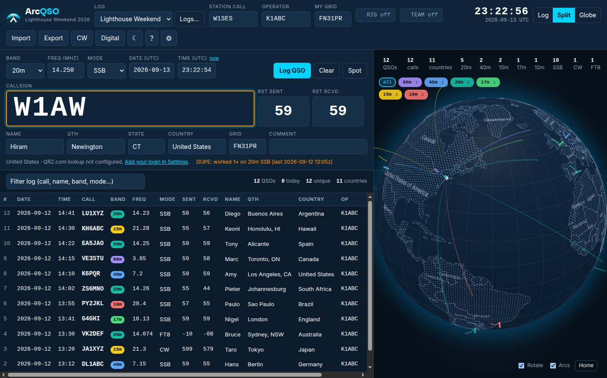
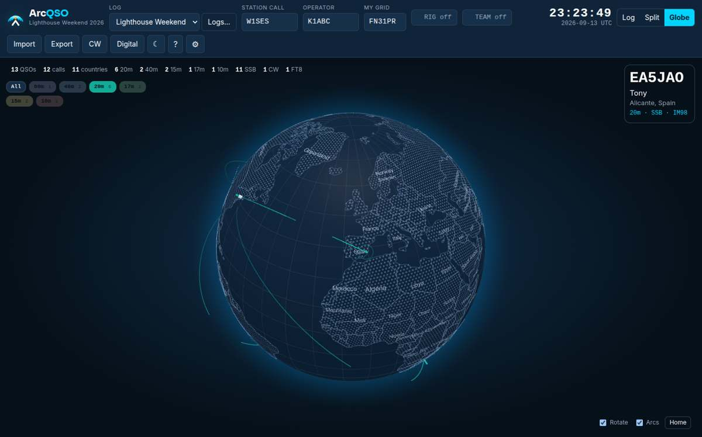
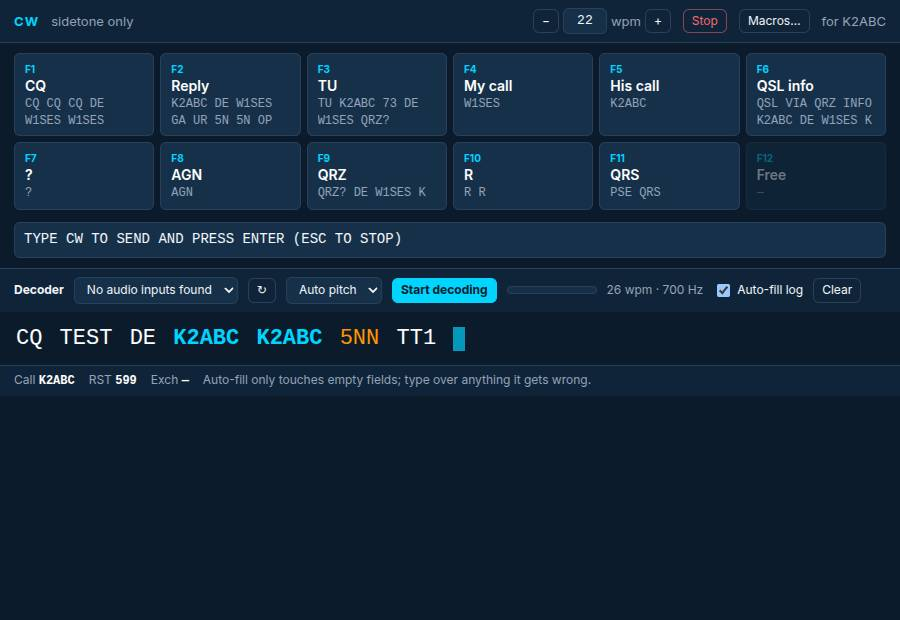
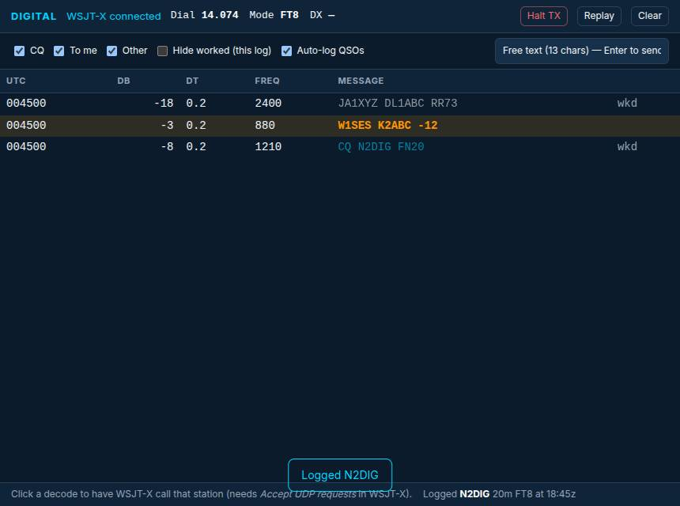

Type the call.
The rest keeps up.
Capture time automatically, keep frequency and mode close, spot duplicates and move through a contact without breaking rhythm.
Log contacts, control your rig, work CW and follow FT8—all in one focused desktop app. Take fast, simple logging into the field on your phone.

Built around the operator
ArcQSO keeps the information you need in reach without crowding the conversation. It is precise enough for contest pace, visual enough to make every contact memorable, and calm enough for an evening in the shack.
Desktop command center
One workspace connects your log, radio and operating tools—so the station stays in sync while you stay on the air.
Capture time automatically, keep frequency and mode close, spot duplicates and move through a contact without breaking rhythm.
See your contacts travel across a rotating globe from your station grid.

Made for how you operate
ArcQSO brings the station workflow into the log instead of making you stitch together a row of unrelated windows.
Keep band, frequency and mode aligned with the radio.
Use a focused keyer, macros and decoder alongside the log.
Follow WSJT-X activity and capture digital contacts cleanly.


A clear field log
The mobile app stays intentionally simple: quick logging for parks, summits, special events and anywhere the radio takes you.
Simple yearly plans
Start with the full station experience or keep a logger in your pocket.
For Windows, macOS and Linux with logging, rig control, CW and FT8 tools.
For iPhone and Android when you want a focused log away from the desk.
Any band. Any mode.
Modern tools for a more connected amateur radio world.
Get ArcQSO